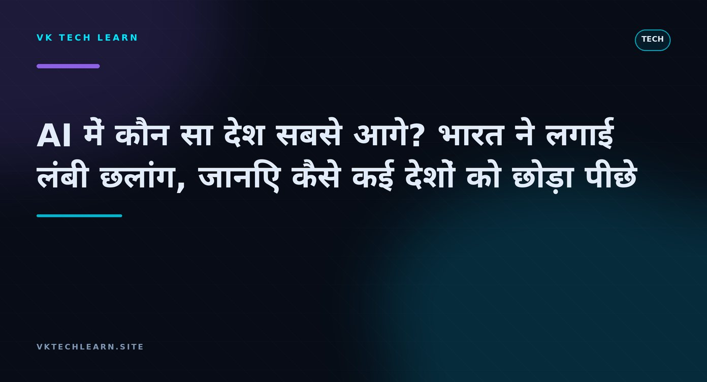

AI में कौन सा देश सबसे आगे? भारत ने लगाई लंबी छलांग, जानिए कैसे कई देशों को छोड़ा पीछे
आर्टिफिशियल इंटेलिजेंस यानी AI अब सिर्फ भविष्य की तकनीक नहीं रही, बल्कि यह आज की ग्लोबल पावर का अहम हिस्सा बन चुकी है। इसी बीच भारत को लेकर एक बड़ी और अहम खबर सामने आई है। एक ताजा इंटरनेशनल रिपोर्ट के मुताबिक, भारत अब दुनिया का तीसरा सबसे प्रतिस्पर्धी देश बन गया है। इस रैंकिंग में भारत से आगे सिर्फ अमेरिका और चीन हैं।

यह उपलब्धि इस बात का संकेत है कि ग्लोबल AI इकोसिस्टम में भारत की मौजूदगी और असर तेजी से बढ़ रहा है। कुछ साल पहले तक जहां भारत को AI के क्षेत्र में उभरता हुआ देश माना जाता था, वहीं अब वह कई विकसित देशों को पीछे छोड़ चुका है।
स्टैनफोर्ड यूनिवर्सिटी की रिपोर्ट क्या कहती है
स्टैनफोर्ड यूनिवर्सिटी के Global AI Vibrancy Tool के तहत जारी Visual Capitalist चार्ट में भारत को बड़ी सफलता मिली है। इस रिपोर्ट के अनुसार भारत को 21.59 का स्कोर मिला है और वह तीसरे स्थान पर है।
इस लिस्ट में अमेरिका पहले स्थान पर है, जिसका स्कोर 78.6 है, जबकि चीन 36.95 अंकों के साथ दूसरे स्थान पर बना हुआ है। स्कोर के मामले में भारत और अमेरिका-चीन के बीच अभी अंतर जरूर है, लेकिन इसके बावजूद भारत ने कई मजबूत और विकसित अर्थव्यवस्थाओं को पीछे छोड़ दिया है।
कई बड़ी अर्थव्यवस्थाओं से आगे निकला भारत
इस रिपोर्ट की सबसे अहम बात यह है कि भारत ने AI के क्षेत्र में दक्षिण कोरिया, जापान, सिंगापुर, यूनाइटेड किंगडम और जर्मनी जैसे देशों को पीछे छोड़ दिया है। ये सभी देश तकनीक और इनोवेशन के मामले में लंबे समय से मजबूत माने जाते रहे हैं।
यह उपलब्धि दिखाती है कि भारत अब केवल एक उभरता हुआ बाजार नहीं रहा, बल्कि वह AI के क्षेत्र में एक मजबूत ग्लोबल खिलाड़ी बन चुका है। हालांकि रिपोर्ट यह भी साफ करती है कि अमेरिका और चीन के स्तर तक पहुंचने के लिए भारत को अभी और मेहनत करनी होगी।
AI में प्रतिस्पर्धा कैसे तय की जाती है
Global AI Vibrancy Tool किसी भी देश की AI ताकत को सिर्फ एक पैमाने पर नहीं आंकता। इसमें कई अहम फैक्टर्स को शामिल किया जाता है, जैसे कि AI टैलेंट की उपलब्धता, रिसर्च और डेवलपमेंट, निवेश का स्तर, सरकारी नीतियां, पब्लिक पर्सेप्शन, टेक्नोलॉजी इंफ्रास्ट्रक्चर और आर्थिक प्रभाव।
इन सभी पहलुओं में भारत ने बीते कुछ वर्षों में लगातार सुधार दिखाया है। खासकर AI टैलेंट, स्टार्टअप ग्रोथ और सरकारी पहलों ने भारत की रैंकिंग को ऊपर ले जाने में बड़ी भूमिका निभाई है।
मजबूत टेक इकोसिस्टम बना भारत की असली ताकत
रिपोर्ट के मुताबिक भारत की इस तेजी के पीछे देश का मजबूत टेक इकोसिस्टम सबसे बड़ा कारण है। भारत में स्टार्टअप कल्चर तेजी से बढ़ा है और AI आधारित स्टार्टअप्स को पहले के मुकाबले ज्यादा निवेश मिल रहा है।
हर साल भारत से लाखों इंजीनियर और टेक प्रोफेशनल्स निकलकर AI, मशीन लर्निंग और डेटा साइंस जैसे एडवांस्ड सेक्टर्स में काम कर रहे हैं। यही स्किल्ड टैलेंट भारत को ग्लोबल कंपनियों के लिए एक आकर्षक डेस्टिनेशन बना रहा है।
ग्लोबल टेक कंपनियों का भारत पर बढ़ता भरोसा
यह रिपोर्ट ऐसे समय पर सामने आई है जब दुनिया की कई बड़ी टेक कंपनियां भारत में AI और क्लाउड इंफ्रास्ट्रक्चर पर बड़ा निवेश कर रही हैं। Amazon ने 2030 तक भारत में AI, लॉजिस्टिक्स और क्लाउड कंप्यूटिंग से जुड़े इंफ्रास्ट्रक्चर में करीब 35 अरब डॉलर निवेश करने की घोषणा की है।
वहीं Microsoft ने भी 17.5 अरब डॉलर के निवेश का ऐलान किया है, जो एशिया में क्लाउड और AI विस्तार के लिए उसका अब तक का सबसे बड़ा निवेश माना जा रहा है।
अमेरिका और चीन के बाद भारत बना बड़ा AI हब
Amazon और Microsoft के अलावा Intel, Cognizant और OpenAI जैसी कंपनियां भी भारत में निवेश और साझेदारी की योजनाएं घोषित कर चुकी हैं। यह साफ दिखाता है कि अमेरिका और चीन के बाद भारत अब दुनिया के लिए एक बड़े AI हब के रूप में उभर रहा है।
अगर आने वाले वर्षों में यही रफ्तार बनी रहती है, तो भारत AI के क्षेत्र में न सिर्फ अपनी स्थिति मजबूत करेगा, बल्कि वैश्विक नेतृत्व की ओर भी तेजी से आगे बढ़ सकता है।